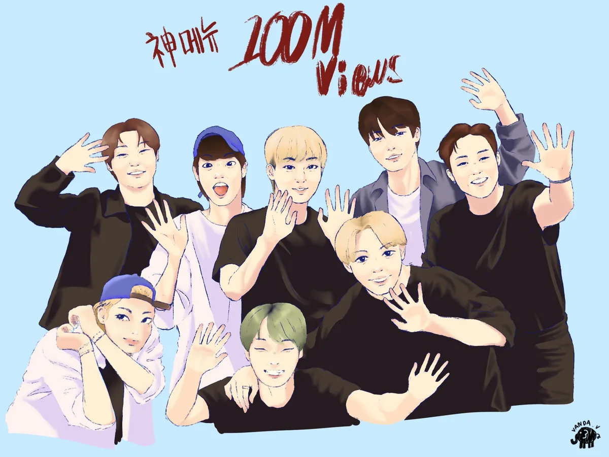
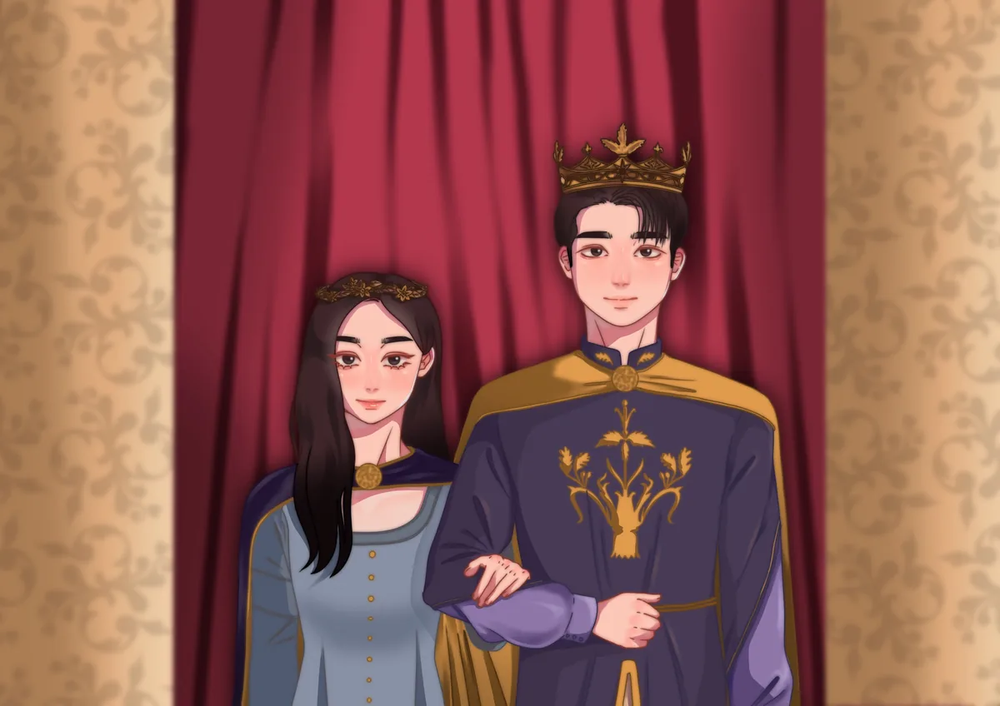

Annisa Raihan Djatmiko
Eca
About
CV
Work
Contact
Illustration
Scope
Personal Project · Digital Illustration
Tools
Procreate · Adobe Illustrator
Year
Ongoing
Personal digital illustration work exploring character design, portraiture, and figurative art. Created in Procreate and Adobe Illustrator.


← Previous
Yashinoki Yokocho Mural